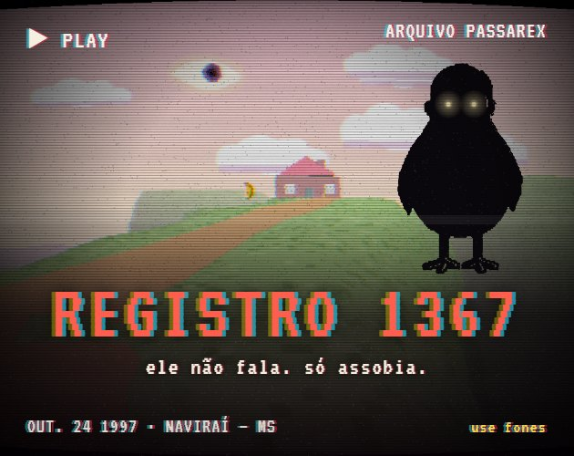
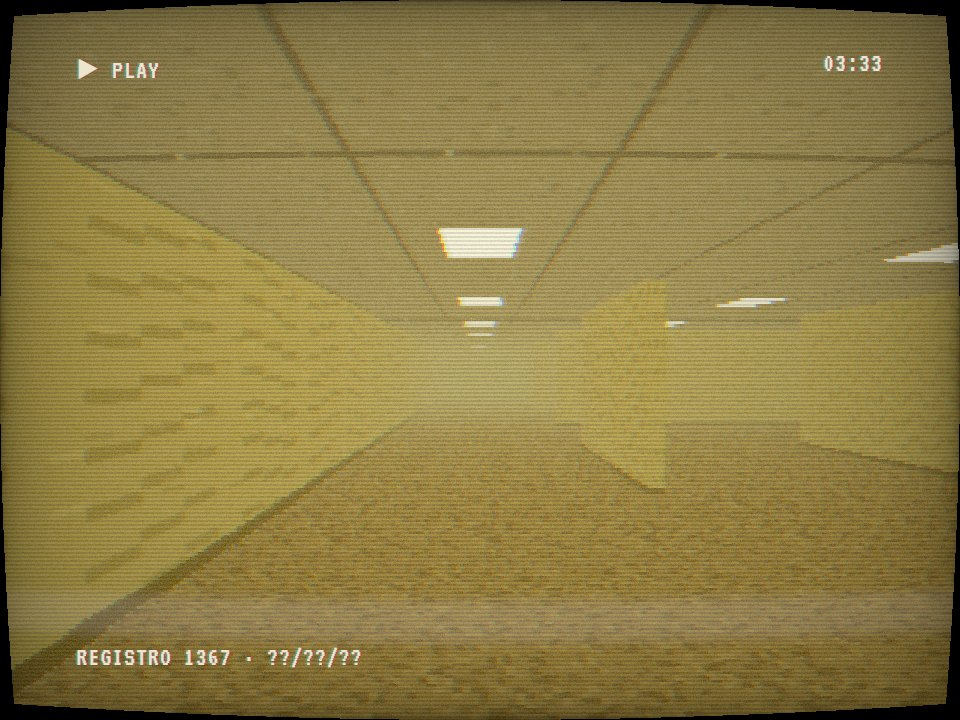

REGISTRO 1367
Um jogo curto de terror dreamcore em primeira pessoa, no estilo PS1 e fita VHS. Já passou da meia-noite. Na estante tem uma fita que você nunca viu. Ele não fala. Só assobia.

Trailer
📼 O jogo recebe atualizações sempre que possível. A mais nova trouxe a avenida de Naviraí, a página de colorir e os três finais. Ver todas as atualizações · segue o @odavyyy1 para saber da próxima.
Atualizações
O que mudou em cada versão. A mais nova fica em cima.
v1.2 · A avenida e os finais
- Nova fase: a avenida de Naviraí. Lojas fechadas, postes, a locadora com TVs na vitrine e a sua casa no fim da rua. Fim de tarde ou quase meia-noite, conforme a porta escolhida na sala de brincar.
- Um orelhão que toca. Do outro lado da linha, uma voz conhecida.
- A página de colorir. Uma folhinha de verdade na escola, para pintar com o mouse ou com o dedo. Pense bem antes de pintar os olhos.
- Os três finais: Fita ejetada, Conexão perdida e o secreto, Registro 1368. A tela final mostra quantos você já encontrou.
- Agora são 3 pistas para achar.
- 12 vozes novas do Passarex e do narrador.
- Ele agora aparece debaixo dos postes, sempre um pouco à frente.
- Correção: a tela não fica mais com falha depois da porta vermelha.
v1.1 · Menu, opções e trilha sonora
23 de novembro de 2026
- Menu principal novo: Continuar (mostra onde você parou), Novo jogo, Opções, Como jogar, Créditos e o trailer.
- Opções: volume geral, volume da música, música do menu ligada ou desligada, legendas das vozes, sensibilidade da câmera e tela cheia. Elas ficam salvas no navegador.
- Pausa com botões: Continuar, Opções e Menu principal.
- Sons gravados pelo oDavyy: o “fiu fiu”, o grito dos sustos, a música do menu e a trilha sonora, que agora toca em loop o jogo inteiro.
- No celular, botões grandes para escolher as falas.
- Link do trailer no menu, na pausa e no fim.
- Correção: os textos tortos que apareciam no começo.
v1.0 · Lançamento
22 de novembro de 2026
- A sala de casa, as colinas, as salas amarelas e a sala de brincar.
- Vozes do Passarex e do narrador, sustos, falhas de tela e a fuga nas salas amarelas.
- Dica com o passarinho guia (tecla H).
- Funciona no PC e no celular.
- Save automático: ao morrer ou fechar o jogo, você volta do último lugar.
O que é
Registro 1367 é um protótipo de jogo do Arquivo Passarex, inspirado na lore d’Os Bacanos: o Passarex, o pássaro com cabeça de gente que aparece parado ao longe em Naviraí e só assobia. Você assiste a uma fita velha do “Canal dos Passarinhos” e é puxado para dentro dela.
Lá dentro tem colinas de sonho com uma casinha rosa, salas amarelas que não terminam, uma sala de brincar com oito portas e a avenida de Naviraí, com uma escola e uma folhinha para pintar. Tem escolhas que mudam o quanto ele te notou, pistas escondidas, uma fuga e alguns sustos.
Prints
deslize para o lado →




Como a gente fez
O jogo foi feito por oDavyy conversando com o Claude Code, o agente de programação da Anthropic, numa mesma tarde. O Davy dava a direção (referências, clima, o que estava bom ou não) e o Claude planejava, programava, testava no navegador e ajustava. O código do jogo não está publicado aqui. Esta página só conta o processo.
- Primeiro o plano. Antes de programar, fizemos um plano curto: duração, quem é o jogador, quantos finais, quais lugares e uma lista de etapas pequenas para testar o clima cedo.
- Visual de PS1 e fita VHS. É um jogo 3D que roda no navegador. A imagem é desenhada em 320×240 e ampliada, os vértices “tremem” como no PlayStation 1, tem névoa, e por cima vai um filtro de TV de tubo: tela curva, linhas, ruído, cor vazando e a faixa de tracking.
- O Passarex continua sendo o desenho da série. Em vez de virar um boneco 3D diferente, o desenho 2D original vira uma figurinha recortada dentro do mundo 3D, sempre virada para você. Colorido nos lugares de sonho, em silhueta com os olhos acesos no escuro.
- Lugares de sonho. A sala de casa de 1997, colinas em forma de mesa ligadas por uma crista (com um olho no lugar do sol), salas amarelas no estilo backrooms montadas como labirinto, uma sala de brincar com nuvens, mezanino, bolinhas que dá para chutar e arco-íris, e a avenida de Naviraí com uma escola e uma folhinha de verdade para pintar.
- Vozes geradas no próprio PC. As falas foram geradas no VoiceStudio local. O Passarex tem voz mais aguda, de criança, passada por um filtro de rádio com engasgos, quedas de sinal e chiado. O narrador do “Arquivo” tem cara de fita velha.
- Som feito na hora. A caixinha de música desafinada, o zumbido das lâmpadas, o telefone, o vento, os passos e o “fiu fiu” são sintetizados pelo navegador enquanto você joga. Por cima, os sons gravados pelo próprio oDavyy: o “fiu fiu”, o grito dos sustos, a música do menu e a trilha sonora.
- Sustos e uma fuga leve. Alguns quadros rápidos do rosto, falhas de tela com texto e uma fuga nas salas amarelas: ele vem atrás de você, mais devagar que você. Se te pegar, aparece “SINAL PERDIDO” e você volta de onde a fuga começou.
- Nunca fica perdido. O botão de dica mostra o que fazer e solta um passarinho amarelo que voa mostrando o caminho e espera por você.
- Celular e publicação. Joystick na tela, arrastar para olhar, botões grandes e tela cheia na horizontal. O jogo inteiro tem uns 9 MB e foi publicado no itch.io.
Finais possíveis
O que você faz durante a fita conta. Um contador escondido, “ele te notou”, sobe quando você atende o telefone, encara o vulto, responde à TV, abre a porta errada ou pinta os olhos dele. Junto com as 3 pistas e as 3 penas que você acha, ele decide como a fita termina.
Ver os finais (spoiler)
O caminho
- A porta da sala de brincar define como vai estar Naviraí: fim de tarde (praia, escada ou campo) ou quase meia-noite (navio, rua ou quarto). A porta vermelha não deixa passar, e uma delas só dá numa parede.
- Na avenida, um orelhão toca. A folhinha de colorir está na mesa da professora, na escola. Pintar os olhos dele conta como ele te notar.
- As pistas: o recorte de jornal na gaveta da sala, a página do diário no navio e a folhinha da escola. As penas ficam nas salas amarelas.
Os três finais
- A · Fita ejetada. O final mais comum. Você acorda no sofá, a fita sai sozinha do videocassete e, lá longe, um “fiu fiu”.
- B · Conexão perdida. Ele te notou 3 vezes ou mais. A luz apaga e ele aparece parado na sua frente, dentro de casa.
- C · Registro 1368 (secreto). As 3 pistas, as 3 penas e no máximo 1 vez notado. A câmera agora está do lado de fora da sua janela.
A tela final mostra quantos dos três finais você já encontrou.
Save
O jogo salva sozinho a cada lugar novo, a cada pista e a cada pena (aparece ● SALVO no canto). Se você fechar, na próxima vez dá para continuar de onde parou. Se ele te pegar na fuga, você volta do ponto onde ela começou. O save fica só no seu navegador.
Créditos e direitos
Passarex, o Arquivo Passarex, os personagens e toda a lore pertencem a Os Bacanos. Todos os direitos reservados. Este jogo é um projeto de fã inspirado no universo deles, sem fins lucrativos.
Feito por: oDavyy, com Claude Code.
Veja também: Passarex · Fiu Fiu, 1491 · Elenco do Clubex · @os_bacanos67
Contém sustos repentinos, luzes piscando e sons altos.